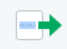
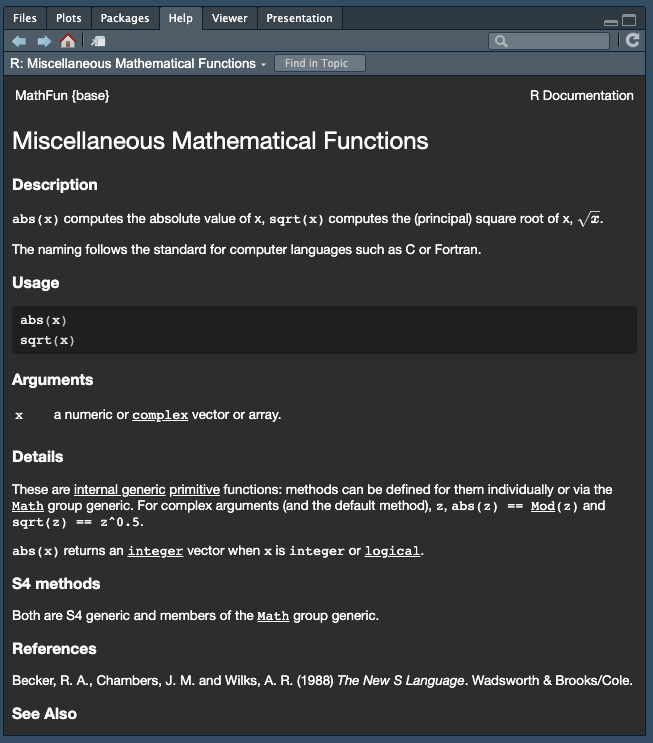

| Evaluation | Points |
|---|---|
| Didn’t turn anything in. | 0 |
| Turned in but low effort, ignoring many directions. |
1 |
| Decent effort, followed directions with some minor issues. |
2 |
| Nailed it! | 3 |
Header
Introduction to R, RStudio, and Quarto
CS&SS 508 • Lecture 1
30 September 2025
Victoria Sass
Introductions & Syllabus
Welcome!
- Introductions
- Syllabus
- Lecture 1: Introduction to R, RStudio, and Quarto
Who Am I?
- Victoria (Vic) Sass
. . .
- PhD Candidate in Sociology
. . .
- I’ve been using
RandRStudiofor over 10 years 😱
. . .
- I love teaching this class 🤓
Introductions
Let’s start by getting to know each other a bit better. On your index card write the following:
Name and pronouns
Program and year
Experience with programming (in R or more generally)
One word that best describes your feelings about taking this class
Would you rather be able to converse with (non-human) animals, or have lifelong fluency in every (human) language?
. . .
Pair up with someone nearby and introduce yourself to one another. Let’s take about 5-10 minutes to do this.
Syllabus
The syllabus (as well as lots of other information) can be found on our course website:
https://vsass.github.io/CSSS508
Feel free to follow along online as I run through the syllabus!
Course goals
This course is intended to give students a foundational understanding of programming in the statistical language R. This knowledge is intended to be broadly useful wherever you encounter data in your education and career. General topics we will focus on include:
- Developing intermediate data management and visualization skills
- Organizing projects and creating reproducible research
- Cleaning data
- Linking multiple data sets together
- Learning basic programming skills
. . .
By the end of this course you should feel confident approaching any data you encounter in the future. We will cover almost no statistics, however it is the intention that this course will leave you prepared to progress in CS&SS or STAT courses with the ability to focus on statistics instead of coding. Additionally, the basic concepts you learn will be applicable to other programming languages and research in general, such as logic and algorithmic thinking.
Logistics: General
Lecture: On Tuesdays we will meet in Raitt 121 for an interactive session where we’ll cover a specific topic to help you learn fundamental skills, concepts, and principles for learning R. Additionally, these sessions will provide you with the opportunity to work with each other to learn and practice key skills in R. I will be available to answer questions and help troubleshoot code as well.
Office Hours: Drop-in to ask questions, get advice, or continue discussions from lab/lecture. We can talk in a breakout room or with the group!
- Wednesdays, 1-3pm (on Zoom; link on Canvas)
Logistics: Three Tools for Class
. . .
. . .
Slack
If you’ve never used Slack before you’ll need to download the desktop app.
. . .
A useful quick-start guide can be found here.
. . .
Go to our Canvas site for the invite link to join our private workspace.
Schedule
. . .
September 30
October 7
October 14
October 21
October 28
November 4
November 11
November 18
November 25
December 2
December 9
Week 1: Introduction to R, RStudio, and Quarto
Week 2: Visualizing Data
Week 3: Workflow and Reproducibility
Week 4: Importing, Exporting, and Cleaning Data
Week 5: Manipulating and Summarizing Data
Week 6: Data Structures & Types
Veterans Day Holiday (No Class)
Week 7: Working with Text Data
Week 8: Writing Functions
︎
Week 9: Iteration
Week 10: Next Steps (optional, based on students’ interest)
Schedule
September 30
October 7
October 14
October 21
October 28
November 4
November 11
November 18
November 25
December 2
December 9
Week 1: Introduction to R, RStudio, and Quarto
Week 2: Visualizing Data
Week 3: Workflow and Reproducibility
Week 4: Importing, Exporting, and Cleaning Data
Week 5: Manipulating and Summarizing Data
Week 6: Data Structures & Types
Veterans Day Holiday (No Class)
Week 7: Working with Text Data
Week 8: Writing Functions
︎
Week 9: Iteration
Week 10: Next Steps (optional, based on students’ interest)
Prerequisites
. . .
None 😎
Course Materials
Materials: All course materials will be provided on the course website. This includes:
- Lecture slides and the code used to generate them.
- Homework instructions and/or templates.
- Recommended reading/cheatsheet(s).
- Useful links to other resources.
. . .
Laptops: You’re expected to bring a personal laptop to class as it helps to gain familiarity with the software you’ll be using and gaining hands-on experience with the material we’re learning. If you don’t have access to a laptop you can loan one from UW through the Student Technology Loan Program.
. . .
Readings
Textbooks: This course has no textbook. However, I will be suggesting selections from R for Data Science to pair with each week’s topic. While not required, I strongly suggest reading those selections before doing the homework for that week.

Course Assessment
Final grade
Credit/No Credit (C/NC); You need at least 60% to get Credit
Homework (75%; assessed by peers)
9 total homeworks; assessed on a 0-3 point rubric. Assigned at the end of lecture sessions and due a week later.
Peer Grading (25%; assessed by me)
One per homework, assessed on a binary satisfactory/unsatisfactory scale. Due 5 days after homework due date.
| Evaluation | Points |
|---|---|
| Didn’t follow all peer-review instructions. | 0 |
| Peer review is at least several sentences long, mentions any and all key issues from the assignment, and points out at least one positive thing in your peer’s work (and hopefully more!). | 1 |
Due Dates and Late Policy
Homework/peer grading instructions and deadlines can be found on the Homework page of the course website. All homework will be turned in on Canvas by 4:30pm the day it is due.
Ugh, peer grading?
Yes, because:
You will write your reports better knowing others will see them
You learn alternate approaches to the same problem
You will have more opportunities to practice and have the material sink in
. . .
How to peer review:
- Leave constructive comments: You’ll only get the point if you write at least several sentences that includes
- Any key issues from the assignment and,
- Points out something positive in your peer’s work.
- Send me a message on Slack if you would like your assignment to be regraded or for me to provide feedback if no peer review was given.
Academic Integrity
Academic integrity is essential to this course and to your learning. Violations of the academic integrity policy include but are not limited to:
- Copying from a peer
- Copying from an online resource
- Using resources from a previous iteration of the course.
I hope you will collaborate with peers on assignments and use Internet resources when questions arise to help solve issues. The key is that you ultimately submit your own work.
Anything found in violation of this policy will be automatically given a score of 0 with no exceptions. If the situation merits, it will also be reported to the UW Student Conduct Office, at which point it is out of my hands. If you have any questions about this policy, please do not hesitate to reach out and ask.
. . .
Using AI Tools
AI tools can be helpful while you’re learning R, especially for asking clarifying questions about what code is doing. But keep in mind that they often make mistakes — and sometimes confidently give you flawed, biased, and/or suboptimal code. If you don’t understand the basics, fixing those mistakes can be more work than writing the code yourself. Think of AI as a study aid — useful for clarification and explanations — but if you rely on it too much, it can actually hold back your learning and even weaken your coding skills over time. The real learning happens when you practice coding on your own.
Classroom Environment
I’m committed to fostering a friendly and inclusive classroom environment in which all students have an equal opportunity to learn and succeed. This course is an attempt to make an often difficult and frustrating experience (learning R for the first time) less obfuscating, daunting, and stressful. That said, learning happens in different ways at at a different pace for everyone. Learning is also a collaborative and creative process and my aim is to create an environment in which you all feel comfortable asking questions of me and each other. Treat your peers and yourself with empathy and respect as you all approach this topic from a range of backgrounds and experiences (in programming and in life).
Names & Pronouns: Everyone deserves to be addressed respectfully and correctly. Fill out your profile on Slack with your picture, preferred name (as your Display Name), and gender pronouns so we can all be on the same page!
Diversity: Diverse backgrounds, embodiments, and experiences are essential to the critical thinking endeavor at the heart of university education. Therefore, I expect you to follow the UW Student Conduct Code in your interactions with your colleagues and me in this course by respecting the many social and cultural differences among us, which may include, but are not limited to: age, cultural background, disability, ethnicity, family status, gender identity and presentation, body size/shape, citizenship and immigration status, national origin, race, religious and political beliefs, sex, sexual orientation, socioeconomic status, and veteran status.
Accommodations
Accessibility & Accommodations: Your experience in this class is important to me. If you have already established accommodations with Disability Resources for Students (DRS), please communicate your approved accommodations to me at your earliest convenience so we can discuss your needs in this course. If you have not yet established services through DRS, but have a temporary health condition or permanent disability that requires accommodations (conditions include but not limited to; mental health, attention-related, learning, vision, hearing, physical or health impacts), you are welcome to contact DRS at 206-543-8924, uwdrs@uw.edu, or through their website.
. . .
Religious Accommodations: Washington state law requires that UW develop a policy for accommodation of student absences or significant hardship due to reasons of faith or conscience, or for organized religious activities. The UW's policy, including more information about how to request an accommodation, is available at Religious Accommodations Policy. Accommodations must be requested within the first two weeks of this course using the Religious Accommodations Request form.
Help and Feedback
Getting Help: If at any point during the quarter you find yourself struggling to keep up, please let me know! I am here to help. A great place to start this process is by chatting before1 class, coming to office hours, or message meon Slack.
. . .
Also, help one another as you navigate this course! Slack allows you to chat directly with one another, send messages to the whole class about specific topics (see the already-created # r-code-questions and # quarto-questions channels), send snippets of code or entire files to one another, and much more.
. . .
Asking Questions
Don’t ask like this:
tried lm(y~x) but it iddn’t work wat do
. . .
Instead, ask like this:
y <- seq(1:10) + rnorm(10) x <- seq(0:10) model <- lm(y ~ x)Running the block above gives me the following error, anyone know why?
Error in model.frame.default(formula = y ~ x, drop.unused.levels = TRUE) : variable lengths differ (found for 'x')
Questions?
Introduction to R, RStudio, and Quarto
A Note on Slide Formatting
Bold usually indicates an important vocabulary term. Remember these!
. . .
Italics indicate emphasis but also are used to point out things you must click with a mouse.
- For example: “Please click File > Print”
. . .
Code represents R code you could use to perform actions.
- For example: “Press
Ctrl-Pto open the print dialogue.”
. . .
Code chunks that span the page represent actual R code embedded in the slides.
7 * 49A Note on Slide Formatting
Bold usually indicates an important vocabulary term. Remember these!
Italics indicate emphasis but also are used to point out things you must click with a mouse.
- For example: “Please click File > Print”
Code represents R code you could use to perform actions.
- For example: “Press
Ctrl-Pto open the print dialogue.”
Code chunks that span the page represent actual R code embedded in the slides.
A Note on How to Use These Slides
Since the lectures for this class were created using Quarto, there are numerous built-in features meant to facilitate your learning, particularly of R.
- The in the bottom left-hand corner will show you a table of contents for the entire slideshow, allowing you to find what you’re looking for more easily.
- Anything followed by is a link to an external site. You will be shown a preview (if available) within the presentation first and from there you can open the link in a new tab to explore it more.
- If you hover over any chunk of
Rcode embedded in the slides you will see a which you can click to copy the code. You can then paste it in your own Quarto document orRscript to run it in your session of RStudio. - Comments about how the code functions or additional options available can be found in numbered circles on the right-hand side of the relevant code-chunk (similar to this: ). You can reveal what they say by simply hovering your cursor over the corresponding circle.
- To get a PDF version of these slides click the in the bottom left-hand corner, click the (top, center of the navigation window), and select PDF Export Mode to generate a version you can print or save as PDF. Note: many of these slides are interactive and those features will not translate to the static format of a PDF.
- You can search the slides for keywords by pressing R and then Command + F (Mac/Linux) or Ctrl + F (PC)
- Clicking on the in the bottom left-hand corner allows you to draw directly on the slides, in a very Microsoft Paint kind of way. See if it’s useful but I make no promises!
- Type ? at any time to see all the available key-board shortcuts.
- Some content may be scrollable (like this page!). If this is the case I will put the icon in the title to let you know.
Why R?
R is a programming language built for statistical computing.
If one already knows Stata or similar software, why use R?
. . .
- R is free.
. . .
- R has a very large community.
. . .
- R can handle virtually any data format.
. . .
- R makes replication easy.
. . .
- R is a language so it can do everything.
. . .
- R skills transfer to other languages like Python and Julia.
R Studio
R Studio is a “front-end†or integrated development environment (IDE) for R that can make your life easier.
. . .
We’ll show RStudio can…
- Organize your code, output, and plots
- Auto-complete code and highlight syntax
- Help view data and objects
- Enable easy integration of R code into documents with Quarto
. . .
It can also…
Manage
gitrepositoriesRun interactive tutorials
Handle other languages like C++, Python, SQL, HTML, and shell scripting
Selling You on Quarto
Built upon many of the developments of the R Markdown ecosystem, Quarto distills them into one coherent system and additionally expands its functionality by supporting other programming languages besides R, including Python and Julia.

Selling You on Quarto
The ability to create Quarto files in R is a powerful advantage. It allows us to:
- Document analyses by combining text, code, and output
- No copying and pasting into Word
- Easy for collaborators to understand
- Show as little or as much code as you want
- Produce many different document types as output
- PDF documents
- HTML webpages and reports
- Word and PowerPoint documents
- Presentations (like these slides)
- Books
- Theses/Dissertations 😉🎓
- Websites (like the one for this course!)
- Works with LaTeX and HTML for math and more formatting control
Downloading R and RStudio
If you don’t already have R and RStudio on your machine, now is the time to do so!
- Go to the course homepage, https://vsass.github.io/CSSS508
- Click the Download R link and download R to your machine.
- Afterwards, click the Download RStudio link and download RStudio to your machine.
- RStudio already comes packaged with Quarto so you don’t need to download it separately.
Note
As you become a more advanced R user and want to explore the full functionality of Quarto, it’s recommended you download the latest version directly from their website to keep track of the most up-to-date developments/features.
Getting Started
Open up RStudio now and choose File > New File > R Script.
Then, let’s get oriented with the interface:
Top Left: Code editor pane, data viewer (browse with tabs)
Bottom Left: Console for running code (
>prompt)Top Right: List of objects in environment, code history tab.
Bottom Right: Tabs for browsing files, viewing plots, managing packages, and viewing help files.
Editing and Running Code
There are several ways to run R code in RStudio:
. . .
- Highlight lines in the editor window and click      Run at the top right corner of said window or hit
Ctrl+Enteror⌘+Enterto run them all.
Editing and Running Code
There are several ways to run R code in RStudio:
Highlight lines in the editor window and click     Run at the top right corner of said window or hit
Ctrl+Enteror⌘+Enterto run them all.With your caret2 on a line you want to run, hit
Ctrl+Enteror⌘+Enter. Note your caret moves to the next line, so you can run code sequentially with repeated presses.
. . .
- Type individual lines in the console and press
Enter.
. . .
- In quarto documents, click within a code chunk and click the green arrow  
 to run the chunk. The button beside that (   ) runs all prior chunks.
to run the chunk. The button beside that (   ) runs all prior chunks.
. . .
The console will show the lines you ran followed by any printed output.
Incomplete Code
If you mess up (e.g. leave off a parenthesis), R might show a + sign prompting you to finish the command:
> (11-2
+Finish the command or hit Esc to get out of this.
R as a Calculator
In the console, type 123 + 456 + 789 and hit Enter.
. . .
123 + 456 + 789[1] 1368. . .
The [1] in the output indicates the numeric index of the first element on that line.
. . .
Now in your blank R document in the editor, try typing the line sqrt(400) and either clicking Run or hitting Ctrl+Enter or ⌘+Enter.
. . .
sqrt(400)[1] 20Functions
sqrt() is an example of a function in R.
Arguments are the inputs to a function. In this case, the only argument to sqrt() is x which can be a number or a vector of numbers.
. . .
The basic template of a function is
function_name(argument1, argument2 = value2, argument3 = value3...)
. . .
Help
If we didn’t have a good guess as to what sqrt() will do, we can type ?sqrt in the console and look at the Help panel on the bottom right.
?sqrtIf you’re trying to look up the help page for a function and can’t remember its name you can search by a keyword and you will get a list of help pages containing said keyword.
??exponential
Help
Help files provide documentation on how to use functions and what functions produce. They will generally consist of the following sections:
- Description - What does it do?
- Usage - How do you write it?
- Arguments - What arguments does it take; which are required; what are the defaults?
- Details - A more in-depth description
- Value - What does the function return?
- See Also - Related R functions
- Examples - Example (& reproducible) code
Objects
R stores everything as an object, including data, functions, models, and output.
. . .
Creating an object can be done using the assignment operator: <-
. . .
new_object <- 144. . .
Operators like <- are functions that look like symbols but typically sit between their arguments (e.g. numbers or objects) instead of having them inside () like in sqrt(x).
. . .
We do math with operators, e.g., x + y.
+ is the addition operator!
Calling Objects
You can display or “call†an object simply by using its name.
new_object[1] 144Naming Objects
Object names must begin with a letter and can contain letters, numbers, ., and _.
Try to be consistent in naming objects. RStudio’s auto-complete feature means long, descriptive names are better than short, vague ones! Good names save confusion later!
. . .
- snake_case, where you separate lowercase words with
_is a common and practical naming convention that I strongly recommend.
snake_case_is_easy_to_read
CamelCaseIsAlsoAnOptionButSortOfHardToReadQuickly
some.people.use.periods
And_some.People_ARETRUErebels. . .
Remember that object names are CaSe SeNsItIvE!!
Also, TYPOS MATTER!
Using Objects
An object’s name represents the information stored in that object, so you can treat the object’s name as if it were the values stored inside. . . .
new_object + 10[1] 154new_object + new_object[1] 288sqrt(new_object)[1] 12Vectors
A vector is one of many data types available in R. Specifically, it is a series of elements, such as numbers, strings, or booleans (i.e. TRUE, FALSE).
. . .
You can create a vector using the function c() which stands for “combine†or “concatenate”. . . .
new_object <- c(4, 9, 16, 25, 36)
new_object[1] 4 9 16 25 36. . .
If you name an object the same name as an existing object, it will overwrite it.
. . .
You can provide a vector as an argument for many functions. . . .
sqrt(new_object)[1] 2 3 4 5 6More Complex Objects
There are other, more complex data types in R which we will discuss later in the quarter! These include matrices, arrays, lists, and dataframes.
Most data sets you will work with will be read into R and stored as a dataframe. Each column in a data frame is treated as a vector by R. Therefore, this course will mainly focus on manipulating and visualizing these two data types.
Quarto
Creating a Quarto Document
Let’s try making an Quarto file:
- Choose File > New File > Quarto Document…
- Make sure HTML Output is selected
- In the Title box call this test document
My First Qmdand click Create - Save this document somewhere (you can delete it later) (either with File > Save or clicking   
 towards the top left of the source pane).
towards the top left of the source pane). - Lastly, click    Render at the top of the source pane to “knit†your document into an html file. This will produce a minimal webpage since we only have a title. We need to add more content!
. . .
If you want to create PDF output in the future, you’ll need to run the following code in your console.
install.packages("quarto")
install.packages('tinytex')
tinytex::install_tinytex()Anatomy of a Quarto Document
---
title: "ggplot2 demo"
author: "Norah Jones"
date: "5/22/2021"
format:
html:
fig-width: 8
fig-height: 4
code-fold: true
---
## Air Quality
@fig-airquality further explores the impact of temperature on ozone level.
```{r}
#| label: fig-airquality
#| fig-cap: "Temperature and ozone level."
#| warning: false
library(ggplot2)
ggplot(airquality, aes(Temp, Ozone)) +
geom_point() +
geom_smooth(method = "loess")
```Elements of a Quarto document include:
- An (optional) YAML header (surrounded by
---s).
- Plain text and any associated formatting.
- Chunks of code (surrounded by
```s) and/or their output.
Quarto Headers
The header of an .qmd file is a YAML4code block, and everything else is part of the main document. Try adding some of these other fields to your YAML and re-render it to see what it looks like.
---
title: "Untitled"
author: "Victoria Sass"
date: "September 30, 2025"
output: html_document
---. . .
To mess with global formatting, you can modify the header5.
output:
html_document:
theme: readableQuarto Syntax
Output
bold/strong emphasisitalic/normal emphasis
Subheader
Subsubheader
Block quote from famous person
Quarto Syntax
**bold/strong emphasis**
*italic/normal emphasis*
# Header
## Subheader
### Subsubheader
> Block quote from
> famous personQuarto Syntax6 Continued
Output
- Ordered lists
- Are real easy
- Even with sublists
- Or with lazy numbering
- Unordered lists
- Are also real easy
- Also even with sublists
- And subsublists
- Also even with sublists
Syntax
1. Ordered lists
1. Are real easy
1. Even with sublists
1. Or with lazy numbering
* Unordered lists
* Are also real easy
+ Also even with sublists
- And subsublistsFormulae and Syntax
Output
Include math \(y= \left( \frac{2}{3} \right)^2\) inline.
Or centered on your page like so:
\[\frac{1}{n} \sum_{i=1}^{n} x_i = \bar{x}_n\]
Or write code-looking font.
Or a block of code:
y <- 1:5
z <- y^2Syntax
Include math $y= \left(\frac{2}{3} \right)^2$ inline.
Or centered on your page like so:
$$\frac{1}{n} \sum_{i=1}^{n}x_i = \bar{x}_n$$
Or write`code-looking font`.
Or a block of code:
```{r}
y <- 1:5
z <- y^2
```Try copying any of the code chunks from the previous three slides to add some formatted text to your own qmd.
Quarto Tinkering
Quarto docs can be modified in many ways. Visit these links for more information.
R Code in Quarto
Inside Quarto, lines of R code are called chunks. Code is sandwiched between sets of three backticks and {r}. This chunk of code…
```{r}
summary(cars)
```Produces this output in your document:
summary(cars) speed dist
Min. : 4.0 Min. : 2.00
1st Qu.:12.0 1st Qu.: 26.00
Median :15.0 Median : 36.00
Mean :15.4 Mean : 42.98
3rd Qu.:19.0 3rd Qu.: 56.00
Max. :25.0 Max. :120.00 . . .
Add this code chunk to your document!
Chunk Options
Chunks have options that control what happens with their code. They are specified as special comments at the top of a block. For example:
```{r}
#| label: bar-chart
#| eval: false
#| fig-cap: "A line plot on a polar axis"
```Chunk Options
Some useful and common options include:
echo: false- Keeps R code from being shown in the documenteval: false- Shows R code in the document without running itinclude: false- Hides all output but still runs code (good forsetupchunks where you load packages!)output: false- Doesn’t include the results of that code chunk in the outputcache: true- Saves results of running that chunk so if it takes a while, you won’t have to re-run it each time you re-render the documentfig.height: 5, fig.width: 5- modify the dimensions of any plots that are generated in the chunk (units are in inches)fig.cap: "Text"- add a caption to your figure in the chunk
Playing with Chunk Options
Try adding or changing the chunk options for the chunk in my_first_Rmd.qmd and re-render your document to see what happens.
```{r}
#| eval: false
summary(cars)
```In-Line R code
Sometimes we want to insert a value directly into our text. We do that using code in single backticks starting off with r.
. . .
Four score and seven years ago is the same as `r 4*20 + 7` years.. . .
Four score and seven years ago is the same as 87 years.
. . .
Maybe we’ve saved a variable in a code chunk that we want to reference in the text:
x <- sqrt(77). . .
The value of `x` rounded to the nearest two decimals is `r round(x, 2)`.. . .
The value of x rounded to the nearest two decimals is 8.77.
This is Amazing!
Having R dump values directly into your document protects you from silly mistakes:
. . .
- Never wonder “how did I come up with this quantity?†ever again: Just look at your formula in your .qmd file!
. . .
- Consistency! No “find/replace†mishaps; reference a variable in-line throughout your document without manually updating if the calculation changes (e.g. reporting sample sizes).
. . .
- You are more likely to make a typo in a “hard-coded†number than you are to write R code that somehow runs but gives you the wrong thing.
Example: Keeping Dates
In your YAML header, make the date come from R’s Sys.time() function by changing:
date: "March 26, 2024"to
date: "`r Sys.time()`"Base R and Packages
Base R
Simply by downloading R you have access to what is referred to as Base R. That is, the built-in functions and datasets that R comes equipped with, right out of the box.
. . .
Examples that we’ve already seen include <-, sqrt(), +, Sys.time(), and summary() but there are obviously many many more.
. . .
You can see a whole list of what Base R contains by running library(help = "base") in the console.
A Base R Dataset: cars
In the sample Quarto document you are working on, we can load the built-in data cars, which loads as a dataframe, a type of object mentioned earlier. Then, we can look at it in a couple different ways.
. . .
data(cars) loads this dataframe into the Global Environment.
. . .
View(cars) pops up a Viewer tab in the source pane (“interactive†use only, don’t put in Quarto document!).
. . .
1head(cars, n = 5)- 1
- prints first 5 rows, can use tail() too
speed dist
1 4 2
2 4 10
3 7 4
4 7 22
5 8 16A Base R Dataset: cars
str() displays the structure of an object:
2str(cars)- 2
- str[ucture]
'data.frame': 50 obs. of 2 variables:
$ speed: num 4 4 7 7 8 9 10 10 10 11 ...
$ dist : num 2 10 4 22 16 10 18 26 34 17 .... . .
summary() displays summary information 8:
summary(cars) speed dist
Min. : 4.0 Min. : 2.00
1st Qu.:12.0 1st Qu.: 26.00
Median :15.0 Median : 36.00
Mean :15.4 Mean : 42.98
3rd Qu.:19.0 3rd Qu.: 56.00
Max. :25.0 Max. :120.00 Base R is pretty…Basic
hist() generates a histogram of a vector. Note that you can access a vector that is a column of a dataframe using $, the extract operator.

hist(cars$dist)
Base R is pretty…Basic
We can try and make this histogram a bit more appealing by adding more arguments and their specifications.
Base R is pretty…Basic
We can also make scatterplots to show the relationship between two variables.
plot(dist ~ speed, data = cars,
xlab = "Speed (mph)",
ylab = "Stopping distance (ft)",
main = "Speeds and stopping distances of cars",
6 pch = 16)
7abline(h = mean(cars$dist), col = "firebrick")
8abline(v = mean(cars$speed), col = "cornflowerblue")- 6
- Specify point shape
- 7
- Adds horizontal line (y-intercept value)
- 8
- Adds vertical line (x-intercept value)

Base R is pretty…Basic
We can also make scatterplots to show the relationship between two variables.
plot(dist ~ speed, data = cars,
xlab = "Speed (mph)",
ylab = "Stopping distance (ft)",
main = "Speeds and stopping distances of cars",
6 pch = 16)
7abline(h = mean(cars$dist), col = "firebrick")
8abline(v = mean(cars$speed), col = "cornflowerblue")- 6
- Specify point shape
- 7
- Adds horizontal line (y-intercept value)
- 8
- Adds vertical line (x-intercept value)

Another Base R Dataset: swiss
Let’s look at another built-in dataset.
. . .
First, run ?swiss in the console to see what things mean.
. . .
Then, load it using data(swiss)
. . .
Add chunks to your Quarto document inspecting swiss, defining variables, doing some exploratory plots using hist or plot.
Looking at swiss
9pairs(swiss,
pch = 8,
col = "violet",
main = "Pairwise comparisons of Swiss variables")- 9
-
pairs()is a pairwise scatterplot function. Good for a quick look at small datasets with numerical/continuous data, but mostly useless for larger data.
Packages
What makes R so powerful though is it’s extensive library of packages. Due to it’s open-source nature, anyone (even you!) can write a package that others can use.
. . .
Packages contain pre-made functions and/or data that can be used to extend Base R’s capabilities.
. . .
. . .
As of this writing there are 22,7379 available packages!
Installing Packages
To use a package outside of Base R you need to do two things:
Installing Packages
To use a package outside of Base R you need to do two things:
- Download the package from
CRAN(TheComprehensiveRArchiveNetwork) by running the following in your console:10
install.packages("package_name"). . .
Installing Packages
To use a package outside of Base R you need to do two things:
- Download the package from
CRAN(TheComprehensiveRArchiveNetwork) by running the following in your console:11
install.packages("package_name")This downloads the package to your local machine (or the server of whatever remote machine you’re using). Thus, you only every need to do it once for each package12!
Installing Packages
To use a package outside of Base R you need to do two things:
- Download the package from
CRAN(TheComprehensiveRArchiveNetwork) by running the following in your console:13
install.packages("package_name")This downloads the package to your local machine (or the server of whatever remote machine you’re using). Thus, you only every need to do it once for each package14!
- Once a package is installed, you need to load it into the current session of
Rso you can use it. You’ll do this by putting the following in anRScript or embedded in a code chunk in a Quarto file:
library(package_name)gt Package
Let’s make a table that’s more polished than the code-y output R automatically gives us. To do this, we’ll want to install our first package called gt. In the console, run: install.packages("gt").
Making cleaner tables
| Fertility | Agriculture | Examination | Education | Catholic | Infant.Mortality |
|---|---|---|---|---|---|
| Min. :35.00 | Min. : 1.20 | Min. : 3.00 | Min. : 1.00 | Min. : 2.150 | Min. :10.80 |
| 1st Qu.:64.70 | 1st Qu.:35.90 | 1st Qu.:12.00 | 1st Qu.: 6.00 | 1st Qu.: 5.195 | 1st Qu.:18.15 |
| Median :70.40 | Median :54.10 | Median :16.00 | Median : 8.00 | Median : 15.140 | Median :20.00 |
| Mean :70.14 | Mean :50.66 | Mean :16.49 | Mean :10.98 | Mean : 41.144 | Mean :19.94 |
| 3rd Qu.:78.45 | 3rd Qu.:67.65 | 3rd Qu.:22.00 | 3rd Qu.:12.00 | 3rd Qu.: 93.125 | 3rd Qu.:21.70 |
| Max. :92.50 | Max. :89.70 | Max. :37.00 | Max. :53.00 | Max. :100.000 | Max. :26.60 |
gt’s Version of head() and tail()
head(swiss) Fertility Agriculture Examination Education Catholic
Courtelary 80.2 17.0 15 12 9.96
Delemont 83.1 45.1 6 9 84.84
Franches-Mnt 92.5 39.7 5 5 93.40
Moutier 85.8 36.5 12 7 33.77
Neuveville 76.9 43.5 17 15 5.16
Porrentruy 76.1 35.3 9 7 90.57
Infant.Mortality
Courtelary 22.2
Delemont 22.2
Franches-Mnt 20.2
Moutier 20.3
Neuveville 20.6
Porrentruy 26.6gt_preview(swiss,
top_n = 3, # default is 5
bottom_n = 3) # default is 1 | Fertility | Agriculture | Examination | Education | Catholic | Infant.Mortality | |
|---|---|---|---|---|---|---|
| 1 | 80.2 | 17.0 | 15 | 12 | 9.96 | 22.2 |
| 2 | 83.1 | 45.1 | 6 | 9 | 84.84 | 22.2 |
| 3 | 92.5 | 39.7 | 5 | 5 | 93.40 | 20.2 |
| 4..44 | ||||||
| 45 | 35.0 | 1.2 | 37 | 53 | 42.34 | 18.0 |
| 46 | 44.7 | 46.6 | 16 | 29 | 50.43 | 18.2 |
| 47 | 42.8 | 27.7 | 22 | 29 | 58.33 | 19.3 |
Homework
Footnotes
Unfortunately I have to leave right after class to catch the ferry so if you want to chat in person, come early to class. I’ll be hanging out in Raitt 121 just after 4pm each Tuesday.↩︎
This thing is the caret: |↩︎
In Quarto documents, comments only work in code chunks. Outside of a chunk,
#creates headers like Comments at the top of this slide.↩︎You can read a bit more about YAML headers in Quarto here and this reference page lists all options possible for html output.↩︎
Be careful though, YAML is space-sensitive; indents matter!↩︎
This is all basic markdown syntax which you can learn about here.↩︎
I suggest while you’re first learning
Rand using Quarto documents you don’t use the visual editor. Its purpose is to facilitate a more limited point-and-click approach toRwhich will inherently limit your ability to learn the language and how to write code. You can turn this default off by going to Tools > Global Options > R Markdown > Visual and unchecking the first box that says Use visual editor by default for new documents↩︎Note R is object-oriented which means
summary()provides different information for different types of objects!↩︎To put this in perspective, there were 19,940 available packages the first time I taught this course (Fall 2023).↩︎
You never want to include this line of code in a Quarto document or an R Script↩︎
You never want to include this line of code in a Quarto document or an R Script↩︎
You’ll only need to re-install a package when you update
Ror if the package itself comes out with an updated version with new features you want to use.↩︎You never want to include this line of code in a Quarto document or an R Script↩︎
You’ll only need to re-install a package when you update
Ror if the package itself comes out with an updated version with new features you want to use.↩︎
Comments
Anything writen after
#3 will be ignorned by R.. . .
Comments help collaborators and future-you understand what, and more importantly, why you are doing what you’re doing with that specific line/chunk of code.
. . .
Additionally, comments allow you to explain your overall coding plan and record anything important that you’ve discovered along the way.